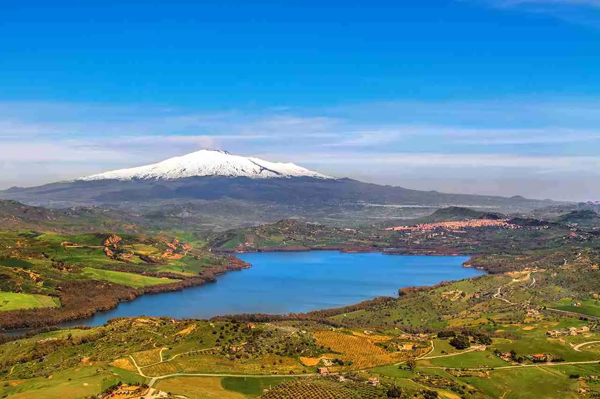
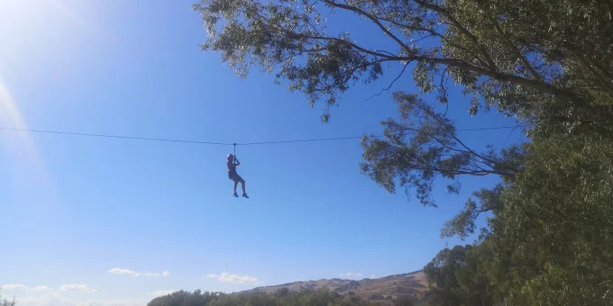
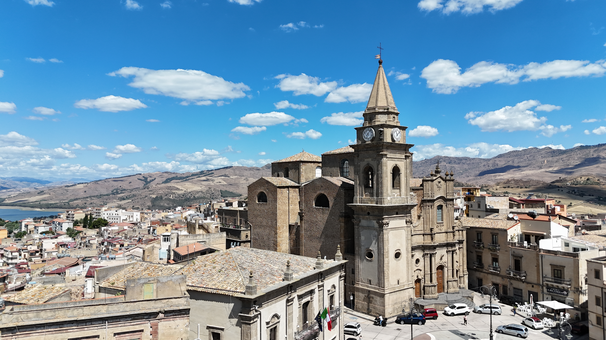
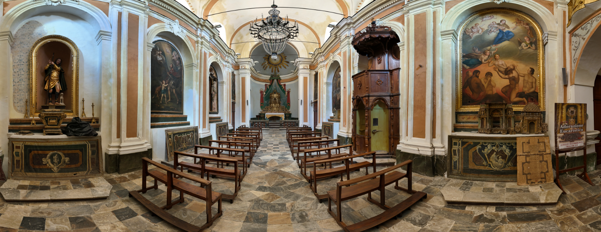
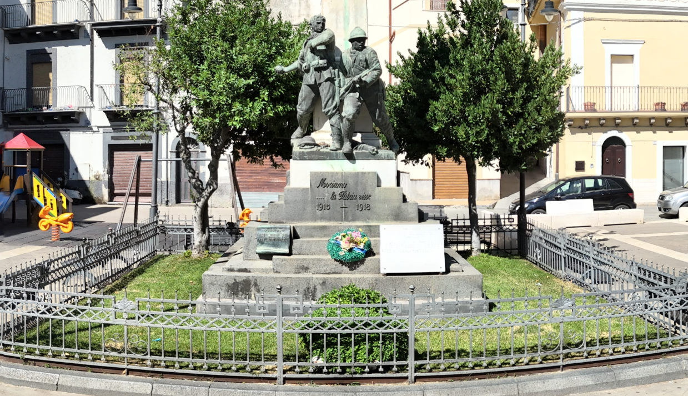
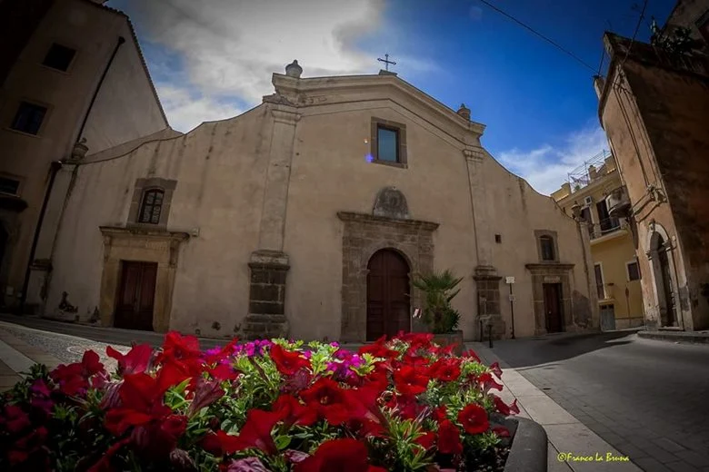
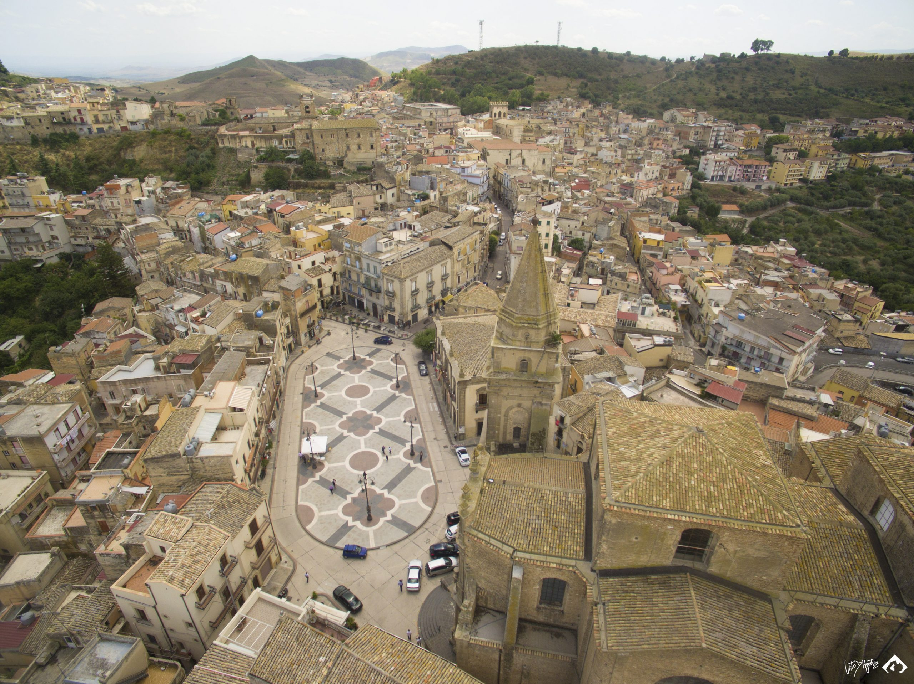

Regalbuto Heritage
In Evidenza
Natura e Paesaggio

Lago Pozzillo
Un'oasi di tranquillità circondata da colline verdi

Parco Avventura Pozzillo
Avventure nella natura per tutta la famiglia
Cultura e Storia

Chiesa di San Basilio
Antica chiesa risalente al XVI secolo, esempio di architettura barocca

Convento di Sant'Antonio
Architettura sacra e storia millenaria

Chiesa di San Rocco
Arte barocca e devozione popolare (anche detta Chiesa del Purgatorio)

Chiesa di Santa Maria della Croce
Antica chiesa ricca di storia e tradizione
Tecnologia
Tecnopolo Magnetico
Lab formativo e spazio di co-working ICT
Mappa Interattiva
Punti di Interesse
Monumenti
Cultura e Storia
Chiesa di San Basilio
Antica chiesa risalente al XVI secolo, esempio di architettura barocca...
La Chiesa Madre, dedicata a San Basilio Magno, rappresenta il cuore spirituale di Regalbuto. Costruita nel XVIII secolo su un precedente edificio di culto, la chiesa presenta una facciata imponente in stile barocco siciliano.
All'interno, l'edificio conserva preziose opere d'arte sacra tra cui dipinti settecenteschi, statue lignee policrome e affreschi di grande valore artistico. Il campanile, visibile da tutta la città, è diventato nel tempo un simbolo di Regalbuto.
Particolarità: Durante i lavori di restauro sono stati rinvenuti resti di mosaici bizantini che testimoniano l'antica presenza cristiana sul territorio.
Convento di Sant'Antonio
Architettura sacra e storia millenaria
Il Convento di Sant'Antonio (Eremo di San Antonio Abate extra mura) è un complesso monastico del XVI secolo che domina il paesaggio urbano di Regalbuto. Fondato dai frati francescani, il convento ha rappresentato per secoli un importante centro di cultura e spiritualità.
La struttura architettonica presenta un chiostro centrale circondato da celle monastiche, una biblioteca storica e una chiesa conventuale decorata con affreschi dell'epoca. Dal convento si gode di una vista panoramica eccezionale sulla valle dell'Enna.
Accesso: Il convento è attualmente inaccessibile al pubblico per motivi di sicurezza e conservazione.
Tour Virtuale: È disponibile un'esperienza immersiva a 360° che permette di esplorare virtualmente gli ambienti conventuali.
Chiesa di San Rocco
Arte barocca e devozione popolare (anche detta Chiesa del Purgatorio)
La Chiesa di San Rocco, conosciuta anche come Chiesa del Purgatorio, è una piccola ma preziosa chiesa barocca caratterizzata da decorazioni elaborate e affreschi dedicati alle anime del purgatorio. Costruita nel XVII secolo, rappresenta un esempio significativo della devozione popolare siciliana.
La facciata, pur di dimensioni contenute, presenta elementi decorativi tipici del barocco siciliano con motivi floreali e angeli scolpiti. L'interno è arricchito da stucchi policromi e dipinti murali che narrano episodi della tradizione cristiana.
Tradizioni: La chiesa è particolarmente cara ai reggalbuttesi per le celebrazioni legate al culto delle anime del purgatorio, con processioni e riti che si tramandano da generazioni.
Chiesa di Santa Maria della Croce
Antica chiesa ricca di storia e tradizione
La Chiesa di Santa Maria della Croce è un importante edificio religioso che testimonia la ricca tradizione spirituale di Regalbuto. La sua architettura rappresenta un esempio significativo dell'arte sacra siciliana.
La chiesa conserva al suo interno preziose opere d'arte e arredi sacri che raccontano secoli di devozione e fede della comunità locale. La facciata presenta elementi decorativi tipici dell'architettura religiosa siciliana.
Tradizioni: La chiesa è centro di importanti celebrazioni religiose che coinvolgono l'intera comunità di Regalbuto, mantenendo vive le tradizioni secolari del territorio.

Chiesa di San Agostino
Edificio religioso di grande valore storico e artistico
La Chiesa di San Agostino rappresenta uno dei più significativi esempi di architettura religiosa di Regalbuto. Edificata in epoca medievale, la chiesa ha subito diverse trasformazioni nel corso dei secoli, mantenendo tuttavia intatto il suo fascino storico e spirituale.
L'interno della chiesa è caratterizzato da un'atmosfera raccolta e suggestiva, con elementi decorativi che testimoniano la devozione della comunità locale verso il grande Santo Dottore della Chiesa.
Architettura: La chiesa presenta una facciata sobria ma elegante, con un portale principale che invita alla contemplazione e alla preghiera.
Patrimonio artistico: All'interno sono conservate opere d'arte sacra di notevole valore, tra cui affreschi e arredi liturgici che raccontano la storia della fede a Regalbuto.

Monumento ai Caduti
Memoria storica e commemorazione degli eroi
Il Monumento ai Caduti di Regalbuto è un'opera commemorativa dedicata alla memoria dei cittadini che hanno sacrificato la loro vita per la patria durante le guerre del XX secolo. Situato in una posizione centrale e simbolica della città, rappresenta un luogo di raccoglimento e memoria storica.
Il monumento, caratterizzato da un'architettura sobria ma solenne, presenta elementi scultorei che richiamano i valori del sacrificio, dell'onore e della memoria. Le iscrizioni incise nella pietra ricordano i nomi dei caduti e le date significative della storia italiana.
Significato storico: Testimonia l'importante contributo di Regalbuto agli eventi storici nazionali e mantiene viva la memoria delle generazioni passate.
Commemorazioni: Ogni anno, in occasione delle ricorrenze nazionali, il monumento ospita cerimonie ufficiali e deposizioni di corone d'alloro.

Cine Teatro Urania
Storico teatro e cinema del centro città
Il Cine Teatro Urania rappresenta il cuore pulsante della vita culturale di Regalbuto. Costruito nel XX secolo, questo elegante edificio ha ospitato generazioni di spettatori, diventando un punto di riferimento per la comunità locale e un simbolo dell'identità culturale della città.
La struttura conserva il fascino dell'architettura teatrale tradizionale, con una sala che unisce funzionalità moderne a elementi decorativi d'epoca. Il teatro è stato palcoscenico di importanti rappresentazioni teatrali, proiezioni cinematografiche e eventi culturali.
Programmazione: Il teatro ospita regolarmente spettacoli di compagnie locali e nazionali, concerti, conferenze e proiezioni cinematografiche, mantenendo viva la tradizione culturale del territorio.
Importanza sociale: Il Cine Teatro Urania non è solo un luogo di spettacolo, ma un centro di aggregazione sociale che favorisce l'incontro e lo scambio culturale tra i cittadini di tutte le età.

Chiesa Maria S.S. della Croce
Chiesa di Santa Maria la Croce, importante punto di culto locale
La Chiesa di Maria Santissima della Croce è un importante luogo di culto che rappresenta una delle principali testimonianze del patrimonio religioso di Regalbuto, dedicata alla Madonna della Croce.
L'edificio sacro custodisce tradizioni devozionali profondamente radicate nella comunità locale e costituisce un punto di riferimento spirituale per i fedeli del territorio.
Devozione mariana: La chiesa è centro di particolare venerazione per la Madonna della Croce, con celebrazioni e riti tradizionali che coinvolgono l'intera comunità.
Chiesa S. Giovanni
Chiesa dedicata a San Giovanni, importante edificio religioso del patrimonio locale
La Chiesa di San Giovanni è una testimonianza importante del patrimonio religioso locale, dedicata al Santo che rappresenta una figura centrale nella tradizione cristiana di Regalbuto.
L'edificio presenta caratteristiche architettoniche tipiche dell'arte sacra siciliana, con elementi decorativi che riflettono la devozione della comunità locale verso questo importante santo.
Patrimonio artistico: La chiesa conserva opere d'arte sacra e arredi liturgici di valore storico e artistico.
Chiesa del Collegio
Chiesa annessa al collegio, importante centro di formazione religiosa e culturale
La Chiesa del Collegio è un importante edificio religioso annesso al complesso collegiale, che ha svolto un ruolo centrale nella formazione religiosa e culturale della comunità di Regalbuto.
L'edificio rappresenta un esempio significativo di architettura religiosa legata all'istruzione, testimoniando l'importanza dell'educazione cristiana nella storia locale.
Funzione educativa: La chiesa è stata per secoli il centro spirituale del collegio, luogo di formazione per diverse generazioni di studenti.
Chiesa Madonna del Carmelo
Chiesa dedicata alla Madonna del Carmelo, importante devozione mariana locale
La Chiesa della Madonna del Carmelo è dedicata a una delle devozioni mariane più sentite nella tradizione cattolica siciliana. La Madonna del Carmelo è venerata come protettrice e madre spirituale della comunità.
L'edificio religioso rappresenta un importante centro di devozione mariana, dove si svolgono celebrazioni e riti tradizionali legati al culto della Madonna del Carmelo.
Tradizioni: La chiesa è particolarmente cara ai fedeli durante la festa della Madonna del Carmelo, celebrata il 16 luglio di ogni anno.
Chiesa S. Domenico
Chiesa dedicata a San Domenico, parte del patrimonio domenicano locale
La Chiesa di San Domenico testimonia la presenza dell'ordine dei Predicatori (Domenicani) nel territorio di Regalbuto. San Domenico di Guzmán, fondatore dell'ordine, è venerato come santo della predicazione e dell'educazione.
L'edificio rappresenta un importante esempio di architettura religiosa legata agli ordini mendicanti, che hanno avuto un ruolo significativo nella storia spirituale e culturale della Sicilia.
Ordine domenicano: La chiesa è testimonianza dell'attività pastorale e culturale dei frati domenicani nel territorio.
Chiesa S. Sebastiano
Chiesa dedicata a San Sebastiano, protettore dalla peste e dalle epidemie
La Chiesa di San Sebastiano è dedicata al santo martire romano invocato tradizionalmente come protettore dalla peste e dalle epidemie. La sua costruzione riflette la devozione popolare verso questo importante santo.
San Sebastiano è una figura centrale nella religiosità siciliana, spesso invocato nei momenti di difficoltà e pericolo, e la sua chiesa rappresenta un luogo di preghiera e raccoglimento per la comunità.
Devozione popolare: La chiesa è stata edificata come voto durante epidemie passate, testimoniando la fede della comunità nei momenti di prova.
Chiesa S. Francesco d'Assisi
Chiesa dedicata a San Francesco d'Assisi, testimonianza dell'ordine francescano
La Chiesa di San Francesco d'Assisi testimonia la presenza dell'ordine francescano nel territorio di Regalbuto. San Francesco, fondatore dell'ordine dei Frati Minori, è venerato come santo della pace e della povertà evangelica.
L'edificio rappresenta un importante esempio di architettura francescana, caratterizzata dalla semplicità e dall'armonia che riflettono lo spirito del santo di Assisi.
Spiritualità francescana: La chiesa è un luogo di preghiera e contemplazione che richiama i valori di umiltà e carità predicati da San Francesco.
Chiesa S.M. delle Grazie
Chiesa di Santa Maria delle Grazie con convento annesso, sede dell'Istituto Femminile S. Giuseppe
La Chiesa di Santa Maria delle Grazie è un complesso religioso che include un convento annesso, sede dell'Istituto Femminile San Giuseppe. Rappresenta un importante centro di formazione ed educazione religiosa.
Il complesso è dedicato a Santa Maria delle Grazie, invocata come dispensatrice di grazie e benedizioni, e testimonia la tradizione educativa cattolica femminile nel territorio.
Istituto educativo: Il convento ospita l'Istituto Femminile San Giuseppe, dedicato alla formazione delle giovani donne secondo i principi cristiani.
Chiesa S. Antonio da Padova
Chiesa dedicata a Sant'Antonio da Padova, importante centro di devozione antoniana
La Chiesa di Sant'Antonio da Padova è dedicata al santo francescano portoghese, particolarmente venerato come "santo dei miracoli" e invocato per ritrovare gli oggetti smarriti e per ottenere grazie.
Sant'Antonio da Padova è una delle figure più amate della tradizione cattolica, e la sua chiesa rappresenta un importante centro di devozione antoniana nel territorio di Regalbuto.
Devozione antoniana: La chiesa è meta di pellegrinaggi e preghiere, particolarmente durante la festa del santo il 13 giugno.
Convento S.M. delle Grazie
Convento di Santa Maria delle Grazie, oggi istituto educativo
Il Convento di Santa Maria delle Grazie è un complesso monastico che oggi ospita un istituto educativo. Rappresenta un importante esempio di architettura conventuale siciliana.
Il convento ha mantenuto la sua funzione educativa nel corso dei secoli, adattandosi alle esigenze moderne pur conservando la sua identità spirituale e culturale.
Funzione educativa: Il convento continua la sua missione formativa ospitando attività didattiche e culturali.
Collegio di Maria
Istituto educativo femminile dedicato alla formazione religiosa e culturale
Il Collegio di Maria è un storico istituto educativo femminile che ha svolto un ruolo fondamentale nella formazione religiosa e culturale delle giovani donne di Regalbuto e del territorio circostante.
L'istituzione rappresenta un importante esempio di educazione cattolica femminile, che ha contribuito alla crescita culturale e spirituale di molte generazioni.
Tradizione educativa: Il collegio ha mantenuto nel tempo la sua missione formativa, adattandosi alle trasformazioni sociali.

Palazzo Comunale
Sede del Municipio di Regalbuto, centro amministrativo della città
Il Palazzo Comunale di Regalbuto è la sede del Municipio e rappresenta il centro amministrativo della città. L'edificio è il cuore pulsante della vita istituzionale e civica locale.
Situato in posizione centrale, il palazzo è il luogo dove si svolgono le principali attività amministrative e dove i cittadini possono accedere ai servizi comunali.
Funzione istituzionale: Il palazzo ospita gli uffici comunali, la sala consiliare e gli spazi per le cerimonie ufficiali.
Natura e Paesaggio
Lago Pozzillo
Un'oasi di tranquillità circondata da colline verdi
Parco Avventura Pozzillo
Avventure nella natura per tutta la famiglia
Palazzo Marletta
Palazzo storico della nobile famiglia Marletta, esempio di architettura civile
Il Palazzo Marletta è una delle più importanti testimonianze dell'architettura civile nobiliare di Regalbuto, appartenuto alla storica famiglia Marletta che ha avuto un ruolo significativo nella storia locale.
L'edificio rappresenta un esempio caratteristico dell'architettura nobiliare siciliana, con elementi decorativi e strutturali che testimoniano il prestigio e l'importanza sociale della famiglia proprietaria.
Architettura nobiliare: Il palazzo conserva elementi architettonici tipici delle residenze nobiliari siciliane del XVIII-XIX secolo.
Palazzo Falcone
Palazzo storico della famiglia Falcone, importante edificio civile del centro storico
Il Palazzo Falcone è un importante esempio di architettura civile che testimonia la presenza di famiglie influenti nel tessuto sociale ed economico di Regalbuto nei secoli passati.
L'edificio, appartenuto alla famiglia Falcone, rappresenta un significativo esempio dell'architettura residenziale borghese siciliana, con caratteristiche tipiche dell'epoca di costruzione.
Patrimonio architettonico: Il palazzo conserva elementi originali che testimoniano le tradizioni costruttive locali e il gusto dell'epoca.
Palazzo Gerardi
Storico palazzo della famiglia Gerardi, testimonianza dell'architettura civile locale
Il Palazzo Gerardi rappresenta un importante tassello del patrimonio architettonico di Regalbuto, testimonianza della presenza di famiglie influenti che hanno contribuito allo sviluppo sociale ed economico della comunità.
L'edificio, appartenuto alla famiglia Gerardi, conserva caratteristiche architettoniche tipiche dell'edilizia civile siciliana, rappresentando un esempio significativo dell'architettura residenziale del passato.
Valore storico: Il palazzo testimonia l'evoluzione urbanistica e sociale del centro storico di Regalbuto.
Chiesa rurale San Calogero
Chiesa rurale dedicata a San Calogero, importante punto di culto nell'area rurale
La Chiesa rurale di San Calogero è un importante luogo di culto situato nell'area rurale di Regalbuto, dedicata a San Calogero, santo molto venerato nella tradizione siciliana.
Questa chiesa rappresenta un esempio significativo dell'architettura religiosa rurale, testimoniando la devozione delle comunità contadine verso questo santo protettore.
Tradizione rurale: La chiesa è punto di riferimento per le comunità rurali circostanti, con celebrazioni e riti tradizionali legati al mondo agricolo.
Caserma C.C.
Ex Convento San Domenico, oggi sede dei Carabinieri, testimonianza di riconversione architettonica
L'attuale Caserma dei Carabinieri di Regalbuto è ospitata in un edificio che un tempo fu il Convento di San Domenico, rappresentando un interessante esempio di riconversione architettonica.
L'edificio conserva parte della sua struttura conventuale originaria, testimoniando la trasformazione storica degli spazi sacri in strutture al servizio della comunità civile.
Riconversione storica: Il passaggio da convento domenicano a caserma rappresenta l'evoluzione delle esigenze sociali e istituzionali del territorio.
Istituto di Credito Cooperativo "La Riscossa"
Storica banca cooperativa locale, importante istituzione economica del territorio
L'Istituto di Credito Cooperativo "La Riscossa" rappresenta una delle più importanti istituzioni economiche locali, nata dalla volontà della comunità di creare un sistema bancario cooperativo al servizio del territorio.
La banca cooperativa ha sostenuto lo sviluppo economico di Regalbuto e del territorio circostante, finanziando attività agricole, artigianali e commerciali locali.
Cooperazione: L'istituto rappresenta un esempio di economia cooperativa che ha contribuito al benessere della comunità locale.
Istituto Intesa San Paolo
Filiale bancaria di un importante gruppo finanziario nazionale
L'Istituto Intesa San Paolo rappresenta la presenza nel territorio di uno dei principali gruppi bancari italiani, offrendo servizi finanziari moderni alla comunità locale.
La filiale rappresenta un importante punto di riferimento per i servizi bancari e finanziari, collegando l'economia locale ai circuiti finanziari nazionali.
Servizi bancari: L'istituto offre una gamma completa di servizi bancari e finanziari per privati e imprese.
Palazzo Maccarrone
Palazzo storico della famiglia Maccarrone, esempio di architettura civile tradizionale
Il Palazzo Maccarrone è un importante esempio di architettura civile che testimonia la presenza di famiglie storiche nel tessuto sociale di Regalbuto, rappresentando un significativo elemento del patrimonio architettonico locale.
L'edificio, appartenuto alla famiglia Maccarrone, conserva le caratteristiche tipiche dell'architettura residenziale siciliana, con elementi decorativi e strutturali che riflettono il gusto e lo status sociale dell'epoca.
Tradizione familiare: Il palazzo è testimonianza delle tradizioni e della storia della famiglia Maccarrone nel contesto sociale di Regalbuto.
Palazzo Barone Carchiolo
Palazzo baronale della famiglia Carchiolo, importante residenza aristocratica
Il Palazzo Barone Carchiolo rappresenta una delle più importanti testimonianze dell'architettura aristocratica di Regalbuto, testimoniando la presenza di famiglie nobiliari che hanno influenzato la storia locale.
L'edificio, costruito come residenza del Barone Carchiolo, conserva le caratteristiche architettoniche tipiche dei palazzi baronali siciliani, con elementi decorativi e strutturali che riflettono il prestigio sociale della famiglia.
Architettura baronale: Il palazzo è un esempio significativo dell'architettura aristocratica siciliana tra il XVII e XVIII secolo.
Svago e Sport
Palazzetto dello Sport
Struttura sportiva polivalente per eventi e attività sportive
Il Palazzetto dello Sport di Regalbuto è una moderna struttura sportiva polivalente che ospita eventi sportivi, tornei e manifestazioni culturali. Rappresenta un importante centro di aggregazione per la comunità locale.
La struttura è dotata di impianti all'avanguardia e può ospitare diverse discipline sportive, dalla pallavolo al basket, dal calcio a 5 ad altre attività sportive indoor.
Attività: Tornei sportivi, eventi culturali, manifestazioni pubbliche e attività per le scuole.
Circolo Ricreativo
Centro di aggregazione sociale e ricreativa per la comunità
Il Circolo Ricreativo è un importante centro di aggregazione sociale che offre spazi per il tempo libero, attività ricreative e momenti di socializzazione per cittadini di tutte le età.
La struttura ospita eventi culturali, serate danzanti, tornei di carte e altre attività che contribuiscono a rafforzare i legami comunitari e a promuovere la vita sociale del paese.
Attività: Eventi sociali, attività ricreative, tornei, serate culturali e momenti di aggregazione.
Parco Avventura
Area ricreativa con percorsi avventura e attività all'aria aperta
Tecnologia
Tecnopolo Magnetico
Lab formativo e spazio di co-working ICT
Sezione Didattica
Quiz: Scopri quanto conosci Regalbuto
Metti alla prova le tue conoscenze sulla storia, la cultura e il territorio di Regalbuto con questo quiz di 10 domande.
Materiali Didattici
Storia di Regalbuto
Guida completa alla storia della città dalle origini ai giorni nostri
Scarica PDFTradizioni e Folklore
Feste, tradizioni e cultura popolare di Regalbuto
Tour Virtuale
Luoghi Disponibili
Convento di Sant'Antonio
Chiostro principale
Chiesa di Santa Maria della Croce
Altare principale
Chiesa di San Basilio
Altare principale
Vista Panoramica
Dalle colline di Regalbuto
Piazza Repubblica
Centro storico
Monumento ai Caduti
Memoria e commemorazione
Chiesa di San Agostino
Altare principale
Cine Teatro Urania
Palcoscenico e platea
Chiesa di San Rocco
Ingresso principale
Come usare la modalità VR
Attiva la modalità VR cliccando il pulsante sopra
Inserisci il telefono in un visore VR compatibile
Muovi la testa per esplorare l'ambiente a 360°
Fissa lo sguardo sui punti di interesse per navigare